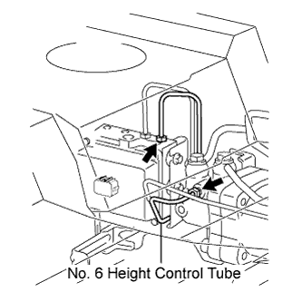
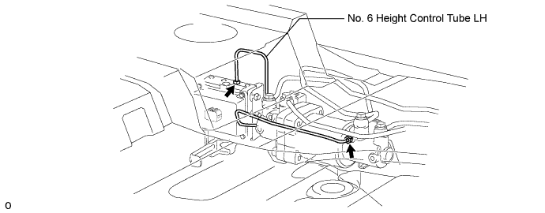
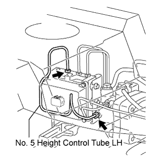
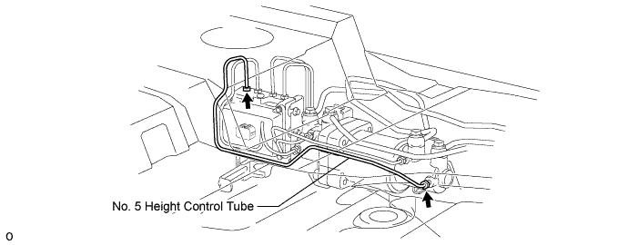

SUSPENSION CONTROL CYLINDER > REMOVAL |
| 1. REMOVE TAILPIPE ASSEMBLY |
for 2UZ-FE:
Remove the tailpipe (Click here).
for 1VD-FTV:
Remove the tailpipe (Click here).
| 2. REMOVE CENTER EXHAUST PIPE ASSEMBLY |
for 2UZ-FE:
Remove the center exhaust pipe (Click here).
for 1VD-FTV:
Remove the center exhaust pipe (Click here).
| 3. REMOVE HEIGHT CONTROL UNIT INSULATOR |
 |
Remove the 3 bolts and insulator from the control unit.
| 4. DISCHARGE SUSPENSION FLUID PRESSURE |
 |
Connect a hose to the bleeder plug for the height control accumulator and loosen the bleeder plug.
Discharge the suspension fluid pressure.
After the fluid pressure has dropped and oil has drained out, tighten the bleeder plug and remove the hose.
| 5. REMOVE NO. 7 HEIGHT CONTROL TUBE |
 |
Using a union nut wrench, remove the control tube from the control valve and pump accumulator.
| 6. REMOVE SUSPENSION CONTROL PUMP ACCUMULATOR ASSEMBLY |
 |
Remove the 3 nuts and pump accumulator.
| 7. REMOVE CLAMP |
Remove the clamp from the 3 height control tubes.
| 8. REMOVE NO. 6 HEIGHT CONTROL TUBE |
 |
Using a union nut wrench, remove the No. 6 height control tube from the control valve and center cylinder.
| 9. REMOVE NO. 6 HEIGHT CONTROL TUBE LH |
Using a union nut wrench, remove the No. 6 height control tube LH from the control valve and center cylinder.

| 10. REMOVE NO. 5 HEIGHT CONTROL TUBE LH |
 |
Using a union nut wrench, remove the No. 5 height control tube LH from the control valve and center cylinder.
| 11. REMOVE NO. 5 HEIGHT CONTROL TUBE |
Using a union nut wrench, remove the No. 5 height control tube from the control valve and center cylinder.

| 12. DISCONNECT REAR NO. 4 HEIGHT CONTROL TUBE |
 |
Disconnect the connector.
Remove the union bolt and gasket, then disconnect the rear No. 4 height control tube from the control valve.
| 13. REMOVE NO. 1 HEIGHT CONTROL VALVE ASSEMBLY |
 |
Remove the 3 nuts and control valve.
Remove the 3 bolt holders and 3 bolt cushions from the control valve.
| 14. DISCONNECT NO. 3 HEIGHT CONTROL TUBE |
 |
Remove the union bolt and gasket, then disconnect the No. 3 height control tube from the control cylinder.
| 15. DISCONNECT NO. 4 HEIGHT CONTROL TUBE LH |
 |
Remove the union bolt and gasket, then disconnect the No. 4 height control tube from the control cylinder.
| 16. DISCONNECT NO. 4 HEIGHT CONTROL TUBE |
 |
Remove the union bolt and gasket, then disconnect the No. 4 height control tube from the control cylinder.
| 17. DISCONNECT NO. 3 HEIGHT CONTROL TUBE LH |
 |
Remove the union bolt and gasket, then disconnect the No. 3 height control tube from the control cylinder.
| 18. REMOVE HEIGHT CONTROL BRACKET WITH CYLINDER ASSEMBLY |
 |
Remove the 2 bolts and bracket with cylinder.
| 19. REMOVE CENTER SUSPENSION CONTROL CYLINDER SUB-ASSEMBLY |
 |
Remove the 2 nuts and cylinder from the bracket.